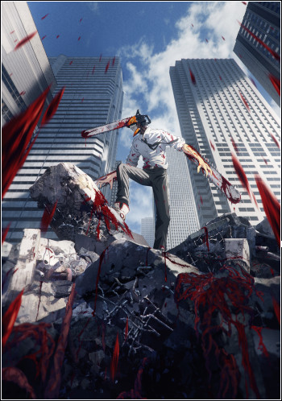

Najciekawsze kontynuacje kultowych serii w sezonie jesiennym!
Sezon jesienny daje nam wiele kontynuacji kultowych serii takich jak:
- Boku no Hero Academia
- Mob Psycho
- Bleach
- Spy x Familiy
- Fumetsu No Anata
Sezon jesienny daje nam wiele kontynuacji kultowych serii takich jak:
W tym sezonie niewątpliwe mamy wiele ciekawych pozycji ale na szczególne wyróżnienie zasługuje Chainsaw Man. Seria ta jest na tyle wyjątkowa, że pierwszy jak i drugi trailer miał rekordowe wyświetlenia w serwisie YouTube, kolejno 5.5m w niecale pól roku i 2.6m w 2 msc. Jest to dowodem na wielkie oczekiwania fanów. Premiera już 12 Października.
Świetna wiadomość dla polskich fanów One Piece'a. Pomimo, że premiera w japonii była już w sierpniu. Fajnie, że te filmy są w końcu wprowadzane w Polsce, bo zazwyczja trzeba bylo czekac nawet półtora roku, aż produkcje pojawią się na blue-rayu. Sieć Multikino poinformowała, wprowadzi ten film anime do swojej oferty. Zapowiedziano także seanse przedpremierowe - 3 listopada 2022 roku.
Anime zapoczątkowało 3 z moich hobby.